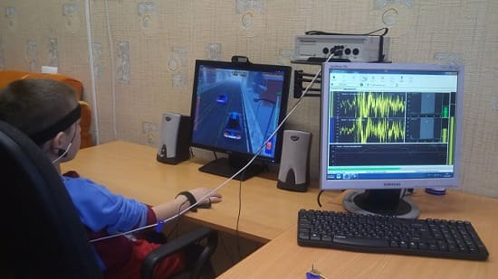

Случаи СДВ и СДВГ (синдром дефицита внимания и гиперактивности) определенно учащаются. Около 10% школьников имеют этот диагноз. И все же это одно из самых неправильно понимаемых, неправильно диагностируемых и неправильно леченных нарушений у детей. Даже «Д» — «дефицит» в аббревиатуре иногда заменяют на «Н» — «нарушение». А самым правильным было бы заменить «С» — «синдром» на «О» — «описание». СДВ описывает образ мыслей, способ познания и метод действий ребенка. У некоторых детей связи с окружающим миром устанавливаются иначе. Они иначе думают, учатся и действуют. Следовательно, они нуждаются в ином подходе к воспитанию и обучению. Тем не менее СДВ может стать нарушением и привести к образованию дефицитной личности, если его вовремя не определить и не корректировать.
ПОНЯТИЕ СДВ
СДВ имеет четыре главных отличия:
1. Избирательное внимание. Внимание большинства детей с СДВ очень трудно привлечь к тому, что они считают неважным, но на самом деле они способны глубоко увлечься вещами, которые считают важными для себя. Например, вратарь хоккейной команды попадает в зону сверхвнимания, когда к нему подъезжает парень с шайбой. Но когда шайба находится на другом конце площадки, он переходит в зону невнимания. В школе ребенок с избирательными зонами внимания выглядит отсутствующим или сосредоточивается на сидящей на ветке птице за окном, что раздражает учителя, который рассказывает о какой-то несущественной войне, произошедшей 1000 лет назад, и побуждает его сделать лать вывод о невнимательности ребенка. Но дайте этому ребенку главную роль в инсценировке об этой войне — и он будет блистать.
2. Неспособность сосредоточиться. Ребенок с СДВ с трудом отфильтровывает мешающие и отвлекающие образы и мысли, так что его ум постоянно отвлекается от основного предмета на несущественные внешние раздражители. Например, во время урока, когда учитель описывает задачу по математике, ребенок замечает, что на его парту села бабочка. Он больше сосредоточен на бабочке, чем на математике — настолько, что кажется, вообще не способен отвлечься от нее. Когда у него много домашних заданий, он настолько обескуражен количеством того, что надо прочитать и выучить, что с трудом приступает к работе, если приступает вообще.
3. Импульсивность. Ребенок с СДВ прыгает прежде, чем видит, куда, и делает прежде, чем думает. Это свойство превращает его в «тридцать три несчастья» и создает ему проблемы с учителями и сверстниками. Его действия часто обозначаются словом «неуместные». На уроке он может выкрикнуть то, что считает правильным ответом, не дожидаясь, пока его спросят. У него могут быть трудности с сопереживанием — он неспособен поставить себя на место другого человека и представить, как люди воспринимают его поведение. Желание толкнуть или ущипнуть одноклассника возникает так быстро, и оно настолько сильно, что ребенок не успевает подумать о том, какие проблемы будут у него из-за этого, или о том, что почувствует обиженный одноклассник.
4. Гиперактивность. В то время, как у одних детей наблюдается то, что называют «тихим СДВ» (чаще встречается у девочек), другие получают в диагноз еще и «Г» — «гиперактивность». Это означает не только то, что ребенок слишком активный, но и то, что его «гипер» проявляется в неуместные моменты, например, во время урока или за обеденным столом.
КАК ОПРЕДЕЛИТЬ, ЕСТЬ ЛИ У ВАШЕГО РЕБЕНКА СДВ
Вот пошаговая инструкция:
1. Ведите дневник. Описывайте в нем поведение ребенка с вами, с учителем и другими людьми, играющими определенную роль в жизни ребенка (например, руководитель отряда скаутов, тренер). Попробуйте разнести записи по трем категориям: «длительность концентрации внимания», «несоответствующее поведение», «трудности в учебе».
2. Отмечайте степень тяжести и прогрессирование проблем в вашем списке. Становится ли лучше, хуже или не меняется? Насколько отклонения поведения отражаются на образовании и социализации ребенка и мешают ему жить счастливо? Являются ли они небольшими неприятными причудами, которые не особо влияют на учебу и социализацию, или они усиливаются настолько, что мешают развитию ребенка и вашим отношениям с ним?
Если вы решили, что ваш ребенок счастлив, добились равновесия в отношениях между ним, учителем и классом и, даже с учетом странностей вашего ребенка, он явно развивается — в этом случае, возможно, вы можете позволить себе выжидать. Повзрослев, он может вырасти из носителя ярлыка «СДВ» в обучаемого ребенка с особенностями поведения. Если после консультаций с учителем, медицинскими работниками и вашей родительской интуицией вы считаете, что СДВ затрудняет жизнь вашего ребенка и он нуждается в профессиональной, образовательной и родительской помощи, — переходите к следующему шагу.
ЧТО ДЕЛАТЬ
Вот список того, что вы и другие люди, имеющие значение для ребенка, можете сделать для управления его развитием и обучением:
3. Продолжайте вести дневник. Усовершенствуйте его. Специалисты по СДВ, скорее всего, захотят узнать: «Каковы основные особенности вашего ребенка?», «Они уменьшаются, усиливаются или остаются без изменений?» и «Насколько они беспокоят вашего ребенка?» Ведение дневника важно для точного диагноза.
4. Прочитайте об алгоритме «таблетка-навык». Вы должны настаивать, чтобы медработники и другие специалисты, помогающие вам и вашему ребенку, принимали этот алгоритм. Одни только таблетки неэффективны. Слишком часто ребенку с СДВ или СДВГ поспешно назначают рецептурные препараты, игнорируя столь же (если не более) важную часть лечения — формирование навыков. При подходе «таблетка-навык» вы прежде всего определяетесь, достаточно ли для компенсации отклонений в поведении ребенка только обучения. Если нет — возможно, необходимы специальные лекарства. Судя по нашему опыту, большинству детей достаточно обучения навыкам, кое-кому нужны и обучение, и таблетки, но одни таблетки никогда не должны использоваться.
5. Расспросите других людей, имеющих значение в жизни ребенка. У детей с СДВ наблюдаются так называемые поперечные ситуативные проблемы — это значит, что отклонения, перечисленные в вашем дневнике, отмечаются и в школе, и дома, при общении со сверстниками, и в других ситуациях. Поэтому если вы при опросе выяснили, что некоторые отклонения поведения у ребенка бывают, например, только в школе, то вполне вероятно, что у него не СДВ — может быть, ребенок и школа просто не подходят друг другу. С другой стороны, если все, имеющие отношение к вашему ребенку, описывают одинаковые нарушения — скорее всего, у ребенка именно СДВ.
6. Посетите школьные занятия. Вызовитесь в течение нескольких дней «помогать» во время уроков в классе, где занимается ваш ребенок. Наблюдайте отклонения поведения и записывайте их в дневник. Если возможно, оборудуйте классную комнату так, чтобы вашему ребенку было удобнее. Попросите, чтобы его сажали за парту в наименее «отвлекающем» месте: подальше от окон, поближе к учителю и уж определенно — подальше от других детей с СДВ.
7. Убедитесь, что ребенок, учитель и школа подходят друг другу. Некоторым детям напрасно навешивают ярлык СДВ. Так как они иначе думают и учатся, им часто необходимы иные методы обучения. Постарайтесь удостовериться, что потребности вашего ребенка находят понимание в школе.
8. Начинайте день с завтрака, полезного для мозга. То, что мы едим, влияет — хорошо или плохо — на мозг. Если ребенок начинает день с дрянного завтрака — ожидайте дрянного поведения. Чего уж проще.
9. Заряжайте своего ребенка. Недавние исследования показали, что многие дети с СДВ заметно прогрессировали в развитии — часто настолько, что даже можно было отменить медикаменты или хотя бы снизить их дозу, — энергично занимаясь физическими упражнениями не меньше часа в день. Это особенно справедливо для детей с СДВГ. Похоже, физические упражнения способствуют расслаблению и увеличивают выработку нейромедиаторов, которые увеличивают концентрацию внимания и уменьшают гиперактивность. Нам в нашей практике удалось таким образом помочь нескольким детям: выполняя домашние задания, они периодически отрывались от занятий и пять минут прыгали на мини-батуте, бегали или делали небольшую зарядку. При этом начинали двигаться не только их тела, но и мозги.
10. Убедитесь, что ребенок высыпается. Не так давно было доказано, что одна из основных причин СДВ и подобных нарушений — недосыпание. Многие врачи вообще считают, что, прежде чем назначать ребенку с СДВ медикаменты, надо изучить его привычки сна, с привлечением сомнолога при необходимости. Нарушения сна и, следовательно, трудности обучения и отклонения поведения могут вызываться следующими медицинскими и психологическими проблемами: ожирением, тревожностью, депрессией, аллергиями, болями в суставах. Свою долю участия в развитии СДВ вносят и преходящие остановки дыхания во сне, на которые обычно не обращают внимания. А недостаток кислорода во сне может нарушать деятельность мозга.
11. Развивайте склонности своего ребенка. У каждого ребенка есть свои склонности, свой особый талант — в спорте или искусстве или музыке. Найдите эту «особенность» вашего ребенка и развивайте ее. Дети с проблемами в обучении и концентрации внимания часто чувствуют, что они отличаются от других — и это их угнетает. Самооценка просто-таки обрушивается, что усиливает нарушения поведения.
СОВЕТ ДОКТОРОВ СИРС: ДЕСЯТЬ ВЕЩЕЙ ВО МНЕ, КОТОРЫЕ МНЕ НРАВЯТСЯ Предложите ребенку написать список из десяти позиций, которые больше всего он в себе любит, и повесьте этот список на стену. Он будет постоянно напоминать о качествах, которые ребенок ценит в себе, и тем самым уменьшать груз СДВ. |
Когда ребенок добивается успеха в области приложения своих склонностей, это повышает его самооценку. Мы называем это эффектом переноса — т.е. успех в одной области способствует академическим и поведенческим успехам.
12. Положительно оценивайте ребенка. Положительное оценивание — важная часть работы родителей и учителей при СДВ. Это особенно важно, если ребенок должен ежедневно выстаивать очередь в кабинет школьной медсестры, чтобы получить свое лекарство, или находится на специальном обучении, или наличие у него проблем подчеркивается каким-нибудь другим образом. Например, вы идете на родительское собрание, где непременно будут описываться несдержанное поведение и невнимательность вашего ребенка. Услышав от учителя: «Он неуправляем» — ответьте: «Он очень активен». Если ребенка называют «упрямым», скажите: «Да, он очень последовательный». Если кто-то говорит: «Мой ужасно гиперактивный» — возразите: «Он просто эмоциональный и энергичный». Когда вы, учитель, ребенок постоянно слышите, как позитивно оценивают вашего ребенка — это изменяет отношение к нему и позволяет оценить яркие стороны СДВ. Большинство таких детей — яркие, занятные, творческие и энергичные личности. На самом деле многим людям, которые сделали этот мир столь приятным местом, например Моцарту или Эдисону, сейчас поставили бы диагноз СДВ. Самооценка вашего ребенка зависит от его восприятия того, как его оценивают другие. Если он будет слышать негативные оценки вроде «лентяй», «тупой», «плохой» — рано или поздно он, скорее всего, начнет им соответствовать.
Вы видите, куда мы двигаемся? Вы уже знаете, как помочь ребенку изучить то, что он хочет знать, и научиться концентрировать внимание. Важно, чтобы родители и другие взрослые, окружающие ребенка, применяли эти знания, прежде чем задуматься о переходе к модифицирующим поведение и внимание таблеткам.
13. Обратитесь за профессиональной помощью. Чтобы лечение ребенка с СДВ было успешным, требуются усилия команды, куда входят учителя, специалисты по обучению, поведенческие терапевты, психологи, иногда группа врачей, например, семейный врач или невролог. Необходимо также проверить слух и зрение. А родители должны быть в этой команде квотербеками, координируя работу ее участников на благо ребенка.
14. Попробуйте обучение с биологической обратной связью. Тренировка мозга с помощью биологической обратной связи — вообще один из старейших способов его тренировки. Он появился в шестидесятые годы прошлого века, и с его помощью летчиков-истребителей учили метко стрелять. Воспринимайте тренировку мозга с помощью биологической обратной связи как тренировку мышц с отягощением. Ребенка усаживают перед монитором и к коже головы прикрепляют маленькие электроды для записи мозговой активности. По существу, ребенок играет в видеоигру, а уровень его внимания отражается в происходящем на экране. Если он снизил концентрацию или отвлекся, изображения на экране сообщают ему об этом. Так как ребенок упражняет нейронные связи, чтобы сконцентрироваться, то со временем они становятся сильнее и более соответствующими его возрасту. Практически в каждом крупном городе есть центры обучения с биологической обратной связью. Посетите сайт Международного общества исследования биологической обратной связи www.ISNR.org.

Обдумайте лечение. Вот моменты, которые подскажут, когда надо задуматься о применении медикаментов:
Если вашему ребенку действительно нужны лекарства, они должны работать — и с очевидным эффектом. Невнятные записи наподобие «Мне кажется, он стал немного лучше» не считаются, так как практически у всех лекарств есть эффект плацебо: когда вы принимаете таблетку, чтобы почувствовать себя лучше, вам начинает казаться, что вы чувствуете себя лучше. Именно поэтому вы должны быть максимально объективными и как можно точнее определял» изменения, например: «Этого хватает, чтобы сделать половину его домашних заданий». |
Препарат |
Дата начала |
Доза |
Замеченные изменения |
Побочные эффекты |
Записывайте главные проблемы, такие как импульсивное поведение, неспособность сосредоточиться и т.д., и затем возле каждой проблемы отмечайте степень ее изменения, например: «лучше», «хуже» или «без изменений». Запишите название лекарства, дозу и время дня, когда вы его давали. Отправляясь к врачу для «коррекции лечения», берите дневник с собой. Записи ваших, учительских или других значительных для ребенка людей наблюдений совершенно необходимы врачу для правильного подбора лечения.
Не забывайте записывать возможные побочные эффекты лекарств, такие как бессонница, уменьшение аппетита, эффект «американских горок» (поведение ребенка ухудшается в конце дня, когда действие препарата заканчивается), необычные реакции, например, подергивания мышц лица или просто ребенку не нравится знать, что он «на лекарствах». Расскажите об этом врачу.
Здоровье ребенка от докторов Сирс / Сирс У. и др.